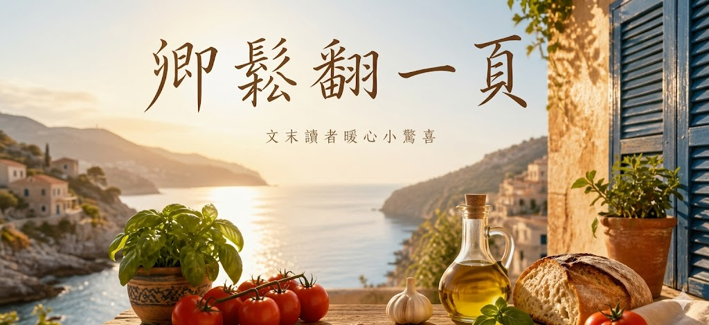

🖐️嗨嗨！我是卿鬆。不知道你是不是也跟我一樣，有一天發現這個世界再也無法讓你逃離吵雜的生活。
跟著我，找回生活的專注與平靜。在這個專屬空間裡，除了有精心挑選的書中精華，文末也為你準備了暖心的小驚喜！
600 公克的無骨牛小排（足足有 1.5 公分厚）走進煎鍋
放在煎鍋上，發出誘人的聲音 ⚡⚡⚡滋— 滋—滋—
梅納反應作用，造成的濃厚香氣和深褐色脆皮——這就是所謂的「鍋氣」，也是美味料理的靈魂所在。
嚓嚓嚓嚓嚓嚓——
緊接著，各種食材在砧板上發出清脆的節奏。
洋蔥🧅微微嗆辣的氣味、切碎番茄罐頭帶點酸味🍅、西洋芹帶出特有味道與清爽口感🥬，加上其他常見家庭煮飯備品。
如果吃飽不想刷煎鍋🍳，這道菜還有提供烤箱烹調方式！
菜單就藏在書中第四章・高蛋白的豐盛主菜
不知你是不是跟我一樣看到牛排就無法抵抗🤤
主廚馬可老師
親身實證讓你不算熱量、不控食量，每天吃好、吃飽又吃瘦
常見五大食譜困擾都沒有
食材好買 營養均衡 烹調簡單 用途多元 保存方便
感謝您的今天的閱報，讀者禮「10元購物金」限量100份
輸入兌換碼「卿鬆領10元」就可以兌換（發報七日內有效）
卿鬆翻一頁，我們下頁見！